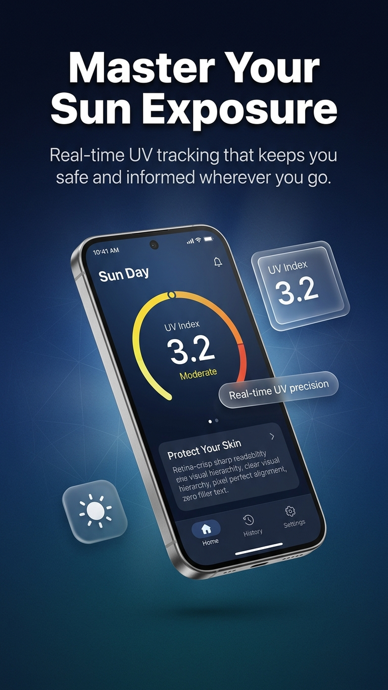
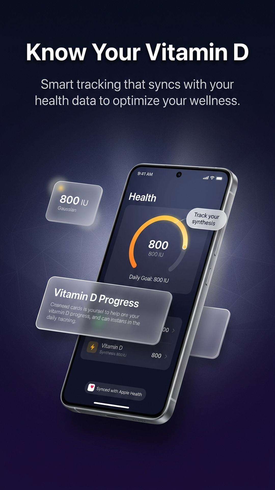

Sun Day
Profitez du soleil sans crainte. Sun Day mesure votre indice UV en temps réel selon votre localisation, suit votre synthèse de vitamine D et vous alerte au bon moment pour protéger votre peau.

Une exposition au soleil maîtrisée
Sun Day combine données environnementales précises et suivi personnalisé de votre santé pour vous donner la confiance de profiter du soleil.
Indice UV en temps réel
Données précises basées sur votre localisation exacte, mises à jour en continu pour décider en un coup d'œil.
Suivi de la vitamine D
Calcul personnalisé de votre synthèse de vitamine D selon votre type de peau, votre tenue et votre temps d'exposition.
Alertes intelligentes
Sun Day vous prévient quand il est temps de chercher l'ombre ou de remettre votre crème solaire, sans jamais vous spammer.
Données de confiance
Alimenté par Open-Meteo, une source ouverte et fiable utilisée par les services météo professionnels.
Confidentialité totale
Aucune publicité, aucun pistage. Vos données de santé restent sur votre appareil. Toujours.
Prévisions horaires
Planifiez vos sorties grâce aux prévisions UV horaires et à la fenêtre optimale pour votre exposition quotidienne.
Votre santé solaire, simplifiée
-
Personnalisé selon votre peau
Le calcul de la vitamine D s'adapte à votre phototype (I à VI) et à vos habitudes vestimentaires.
-
Alertes contextuelles
Notifications discrètes uniquement quand votre peau est en risque, pas toutes les 5 minutes.
-
Phase lunaire & lever du soleil
En bonus, suivez la phase de la lune, l'heure du lever et du coucher du soleil pour planifier votre journée.
-
Conçu par DIH LABS
Application développée par notre association loi 1901 dédiée à des outils numériques utiles, éthiques et sans publicité.

Ressources SEO
En savoir plus sur l'indice UV, la vitamine D et la protection solaire.
Application Indice UV gratuite
Pourquoi suivre l'indice UV en temps réel est devenu indispensable en 2026.
Vitamine D et soleil : le guide complet
Combien de minutes au soleil pour votre dose quotidienne, selon votre peau.
Protection solaire & SPF
Comprendre l'indice de protection et bien choisir sa crème.
Profitez du soleil, en toute confiance.
Téléchargez Sun Day gratuitement et reprenez le contrôle de votre exposition solaire.